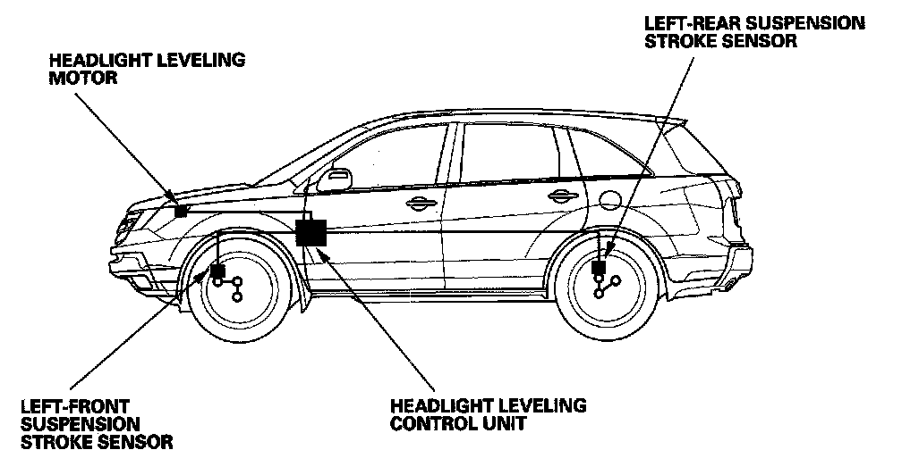

System Description
Headlight Leveling SystemSystem Description

Headlight Leveling System (With HID)
The headlights leveling system is composed of the headlight leveling control unit, the left-front and left-rear suspension stroke sensors, and the left and right headlight leveling motors.
The system uses the left-front and left-rear suspension stroke sensors to monitor the vehicle ride height. The ride height is monitored every 3 minutes while the vehicle is running with the headlight switch ON, and 8 seconds after the vehicles stops with the ignition and headlight switches ON.
If the control unit detects the ride height change, the control unit controls the headlight leveling motors to adjust the headlight vertical position.
Suspension Stroke Sensors
The suspension stroke sensors are also one of the active damper system components. The headlight leveling system uses the left-front and left-rear suspension stroke sensor signals. The left-front suspension stroke sensor is located at the left front suspension area. A short link connects the arm of the sensor to the stabilizer bar. The left-rear suspension stroke sensor is located at the left rear suspension area. A short link connects the arm of the sensor to the damper assembly.
The sensors detect the vehicle ride height and sends a voltage signal (about 0.4 - 4.6 V) to the headlight leveling control unit.
Headlight Leveling Control Unit
The headlight leveling control unit is located under the passenger's side of the dashboard. The headlight leveling control unit uses the voltage signals it receives from the left-front and left-rear suspension stroke sensors to determine the voltage signal (about 2 - 11 V) it sends to control the left and right leveling motors.
Headlight Leveling Motors
The headlight leveling motors are located behind both headlights, and they adjust the headlights vertically based upon the voltage signals (about 2 - 11V) they receive from the headlight leveling control unit.